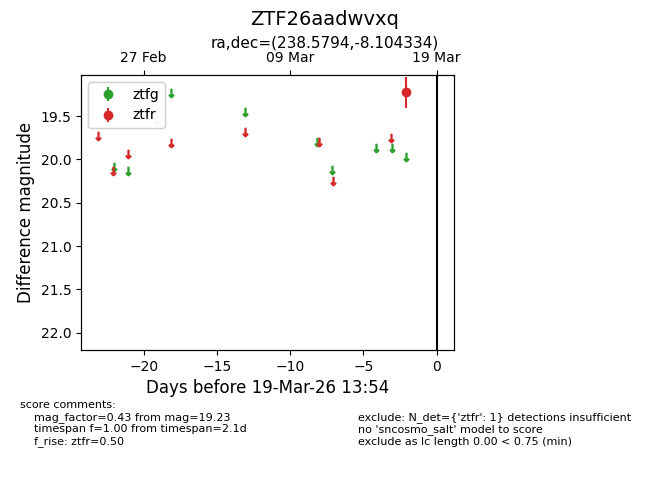
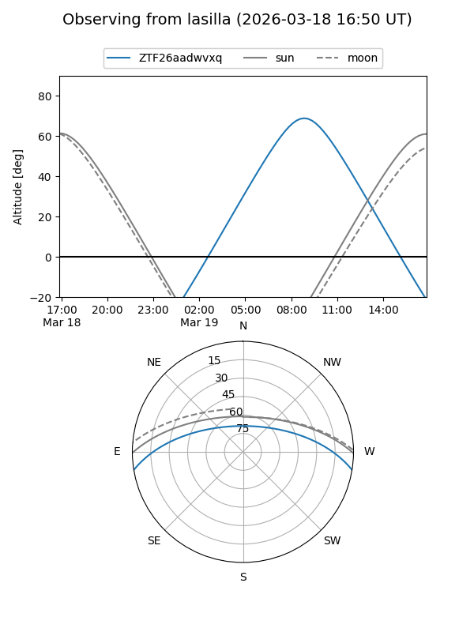
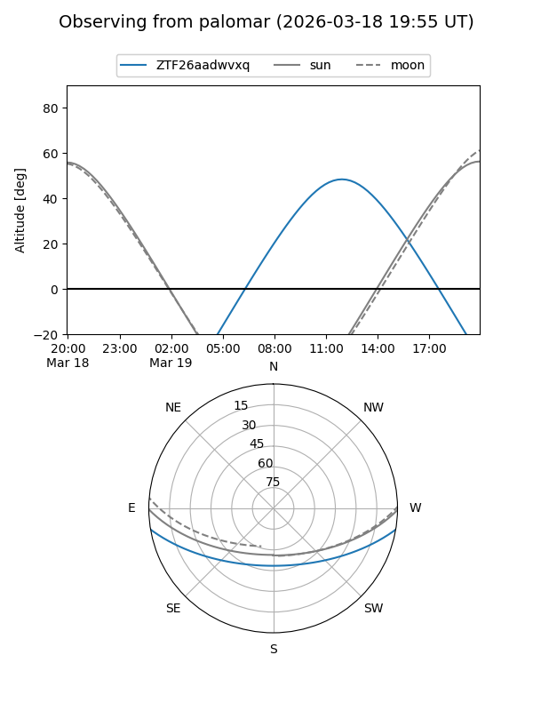

ZTF26aadwvxq
Target ZTF26aadwvxq at 2026-03-19 13:56
Aliases and brokers:
FINK: link
Lasair: link
ALeRCE: link
alt names
ZTF26aadwvxq (ztf,fink_ztf)
Coordinates:
equatorial (ra, dec) = 238.5794,-8.10433
equatorial (HMS+DMS) = 15:54:19.05,-08:06:15.60
galactic (l, b) = (1.0634,+33.42683)
Flags:
Photometry:
last ztfr=19.23
1 ztfr detections
Lightcurve

Visibility


Additional plots